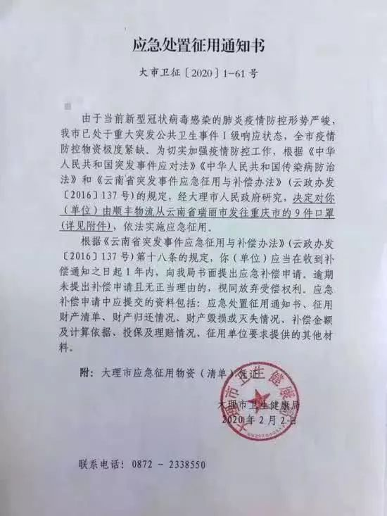
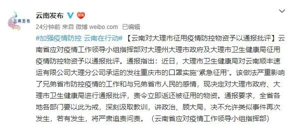

大理征用重庆防疫口罩被通报批评 卫健局长遭免职（更新）
原文链接 备份链接 【财新网】（记者 单玉晓）防疫口罩供应短缺，地方上演“截胡”戏码遭批评。近日，重庆委托供应商从云南购买一批口罩，但这批口罩在运输过程中被大理市卫生部门下文“紧急征用”，重庆方面致函未果，此事曝光后遭到多方批评。2月6 …


*************▲*************2020年1月24日，除夕夜，武汉大学中南医院重症医学科的医护人员坚守岗位。在病房外的办公室里，他们简单地吃了一顿工作餐，当作年夜饭，随即换装上岗，继续奋战在抗击新型肺炎疫情一线。 （新华社/CICPHOTO/新华社记者 熊琦/图）
全文共*1393*字，阅读大约需要3分钟。
如果各地政府都随意征收路过本辖区的防控物资，将对全国抗疫一盘棋的大局带来严重的破坏。
2月6日下午，云南省应对疫情工作领导小组指挥部对大理州大理市政府及大理市卫生健康局征用疫情防控物资予以通报批评，责令立即返还被征用的物资。
本文首发于南方周末 未经授权 不得转载
文 | 辛省志
责任编辑 | 陈斌
疫情紧张之下，各地防护物资储备紧缺，征用民间物资成为各地普遍做法。不过，近日，云南大理市征用了重庆和湖北黄石疫情指挥部采购的防控物资，引起广泛的批评。
据媒体报道，根据一份盖有大理市卫健局公章的“应急处置征用通知书”，大理市征用了由顺丰物流从云南瑞丽发往重庆市的口罩9件。

而重庆市疫情防控领导小组给大理市卫健局的函显示，这批口罩是重庆市疫情防控指挥部指定企业采购的。另一份黄石市防控指挥部发给大理州防控指挥部的函显示，黄石市疫情防控指挥部委托当地龙头企业华新水泥西部事业部和重庆市黄石商会企业（重庆市桥都医药公司）采购一批物资，企业采购后通过顺丰公司大理分公司承运，从云南瑞丽发往黄石，结果也在大理被扣押了。
瑞丽是边境城市，这些物资，可能是受委托企业从境外购买，通过瑞丽过关运进国内。事实上，国外捐赠湖北的物资在通关地被当地强制征用的消息，在社交媒体上也屡屡爆出。
根据突发事件应对法，有关政府及其部门为应对突发事件，可以征用单位和个人的财产。但是根据传染病防治法，根据传染病疫情控制的需要，地方政府只有权在本行政区域内紧急调集人员或者调用储备物资，临时征用房屋、交通工具以及相关设施、设备。在全国范围或者跨省、自治区、直辖市范围调集人员物资，是国务院的权限。重庆和黄石市疫情防控指挥部委托企业采购的防护物资，其所有权属于这两市，顺丰快递大理分公司仅仅是承运单位，不是相关物资的所有权人，大理无权跨省征收。
从疫情严重程度看，黄石市属湖北省管辖，与武汉距离不足100公里，是疫情最严重的地区之一。重庆市也与湖北省接壤。截至2月5日，黄石市共有确诊病例566例，重庆市共有确诊病例389人，而大理仅有确诊病例8人。这两地的疫情防控形势无疑更加严峻。大理市截留征收两地紧急采购的防护物资，将给这两地的疫情防控带来极大影响。
国务院办公厅早在1月29日就发出紧急通知，提出对地方企业生产的医用防护服、N95口罩、医用护目镜、负压救护车、相关药品等重点医疗应急防控物资由国务院应对新冠肺炎疫情联防联控机制物资保障组实施统一管理、统一调拨，地方各级人民政府不得以任何名义截留、调用。在2月3日举行的中共中央政治局常委会会议上，习近平指出，疫情防控要坚持全国一盘棋。各级党委和政府必须坚决服从党中央统一指挥、统一协调、统一调度，做到令行禁止。各地区各部门必须增强大局意识和全局观念，坚决服从中央应对疫情工作领导小组及国务院联防联控机制的指挥。各地区各部门采取举措既要考虑本地区本领域防控需要，也要考虑对重点地区、对全国防控的影响。
根据不久之后的一份大理市新闻通稿，大理市向大理州房地产业协会提供口罩3万个。中物会（物业协会）和省房协也向大理支援了1万个口罩，“一时缓解了口罩需求”。湖北重庆等疫情紧张地区，连医护人员都面临防护用品短缺，而仅有8例确诊病例的大理，扣押前方急缺物资，同时又给上级政府的房地产协会提供大量口罩，与中央的规定不符，对全国整体应对疫情不力。
5日大理方面接受媒体采访曾表示物资已经发放无法追回。好在经过舆论发酵后，6日，重庆商务委表示，大理已经“答应把口罩还回来了”。
2月6日下午，云南省应对疫情工作领导小组指挥部对大理州大理市政府及大理市卫生健康局征用疫情防控物资予以通报批评，责令立即返还被征用的物资。通报要求，全省各地各部门要以此为戒，深刻汲取教训，讲政治、顾大局，决不允许类似事件再次发生，若有发生，将严肃追责问责。

同日，大理市应对新型冠状病毒感染肺炎疫情工作指挥部也回应称：对于前期暂扣口罩一事，我们诚恳的向社会各方表示道歉，对造成的影响进行深深的反思与检讨，对相关人员将进行严肃处理，恳请各方给予谅解。对暂扣还未使用的口罩，能退回的将全部退回被征用主体；对已经使用不能退回的，通过沟通达成有偿征收协议的及时给予补偿；对已经使用，不能退回的，被征收主体又需要口罩的，将尽快补齐后退回。
大理方面应尽快兑现承诺，让紧缺物资尽快在最急需的地方发挥作用。
这种做法必须予以严肃查处，以儆效尤。否则，如果各地政府都随意征收路过本辖区的防控物资，将对全国抗疫一盘棋的大局带来严重的破坏。

征集

《南方周末》现向所有身处新冠肺炎一线的读者公开征集新闻线索。我们欢迎武汉及周边城市医患联系记者，提供防疫前线的一手资讯，讲述您的新春疫情见闻。若您不在武汉，但您身处之所也有与疫情相关的重要新闻线索，亦欢迎您与我们分享。疫情仍在蔓延，南方周末将执笔记录每位国人在疫情面前的希望与困境，与广大读者共同面对疫情。祝愿所有读者朋友们，新春平安。线索可直接给本篇文章留言，格式为：【线索】+内容+您的电话（绝对会对您的个人信息保密）
戳击下面图片 继续阅读专题


原文链接 备份链接 【财新网】（记者 单玉晓）防疫口罩供应短缺，地方上演“截胡”戏码遭批评。近日，重庆委托供应商从云南购买一批口罩，但这批口罩在运输过程中被大理市卫生部门下文“紧急征用”，重庆方面致函未果，此事曝光后遭到多方批评。2月6 …
原文链接 备份链接 疫情发展 根据丁香医生实时数据，截至 2020 年 2 月 6 日 18 时，全国累计确诊病例 28129 例，疑似病例 24702 例，新增确诊病例 3766 例，新增疑似病例 5328 例。其中，重症病例 3859 …
原文链接 备份链接 经济观察网 见习记者 程璐洋 2月4日，经济观察网从湖北省新型冠状病毒感染肺炎疫情防控指挥部和湖北省卫生健康委员会获悉，湖北省红十字会、慈善总会和青少年发展基金会3家机构接收的非定向捐赠医疗防控物资分配方案明确。 湖北 …
原文链接 备份链接 作者 | 江山 编辑 | 张国 2月5日，中国青年报·中国青年网记者看到的一份湖北省广水市二医院紧缺物资需求清单显示，该院医用防护面罩、医用护目镜、防护鞋套等许多物品的库存数量都是“0”。广水市是随州市下辖的县级市之 …
原文链接 备份链接 这样的经历让我们这次“两人世界”变得很值得、很难忘，也很有意义。当我们跟家里老人说，将帮助海外华人实现爱心心愿、把援助物资运回国时，他们也都非常支持。老人还让我们放心，说家里孩子都没事。 口述 | 王珠凤 整理 | …